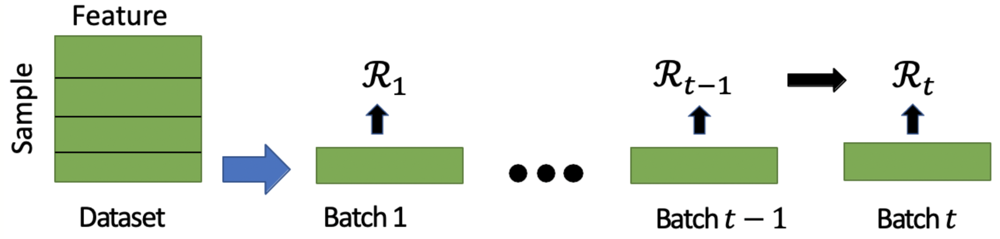

Incremental learning of interpretable classification rules
Bishwamittra Ghosh
Paper Code Cite Slides
Machine learning models are now being deployed in critical decision making, for example, hiring employees, giving a loan to a person, predicting recidivism, etc. Therefore, end-users need to trust the model. Our primary motivation for this work is to design an interpretable rule-based classification model, which generates highly interpretable smaller rules.
Example of interpretable classification rules
First, take a look at the Iris dataset, where each row represents a sample, and each column represents a feature/attribute of the Iris flower. An Iris flower has four features: sepal length, sepal width, petal length, and petal width. In supervised learning, each sample has a class label, i.e., there are three classes in the Iris dataset: Setosa, Versicolor, and Virginica. We can learn the following interpretable rule on the Iris dataset.

A sample is predicted Iris Versicolor if
(sepal length $ > 6.3$ $\textbf{OR}$ sepal width $ > 3$ $\textbf{OR}$ petal width $\le 1.5 $ )
$ \textbf{AND} $
(sepal width $ \le 2.7$ $\textbf{OR} $ petal length $ > 4$ $ \textbf{OR} $ petal width $ >1.2 $)
$ \textbf{AND} $
(petal length $ \le 5 $)
We can parse the above rule in the following way. An Iris flower is predicted as Iris Versicolor if it satisfies the rule. The rule is a conjunction of three clauses, where each clause is a disjunction of literals. A literal (i.e., sepal length $ > 6.3$) can take binary decisions (true or false). In the above rule, a clause is satisfied when at least one literal is satisfied, and the rule is satisfied when all clauses are satisfied. In this work, we are interested in learning classification rules in the form of logical formulas.
Revisiting logical formulas
A logical formula in CNF (Conjunctive Normal Form) is a conjunction of clauses, where each clause is a disjunction of literals. Moreover, a formula in DNF (Disjunctive Normal Form) is a disjunction of clauses, where each clause is a conjunction of literals. Given Boolean propositional variables $ \{a,b,c,d,e\}$, an example of a CNF formula is $(a \vee \neg b \vee c ) \wedge (d \vee e)$, and an example of a DNF formula is $(a \wedge b \wedge \neg c ) \vee (d \wedge e)$. Here $\neg a$ denotes the complement of $a$. In several studies [Malioutov et al., 2018; Lakkaraju et al., 2019], it is found that classification rules in the form of CNF/DNF are highly interpretable.
Definition of Interpretibility
Defining the interpretability of a classifier is a challenging task. We have narrowed down our look into rule-based classifiers and find that smaller rules suffice in various practical domains, specifically in the medical domain. The reason is that compared to larger rules, smaller rules are within reach of human understandability. Therefore, we refer to the size of the rules as a proxy in interpretability. In CNF/DNF rules, rule size can be the total number of literals in the formula.
Objective function and constraints
In the standard binary classification problem, we
have designed an objective function to minimize both the prediction accuracy
and the size of the desired rule, so that the classifier can learn accurate interpretable rules.
In our model, features can take only binary values (0 or 1). For datasets with categorical and continuous features,
we have applied
standard discretization techniques to convert them into
binary features. To learn a $k$-clause rule, we consider two types of Boolean propositional
variables:
(i) feature variable
$ b_i^j = {1}\{j\text{-th feature} \text{ is selected in } i \text{-th clause} \}$,
(ii)
noise variable (classification error) $ \eta_q = {1}\{\text{sample } q \text{ is misclassified}\} $.
We have consider feature variables for both positive (1) feature value and negative (0) feature value in
the binary featured dataset. In the following, we define the objective function. $$\min \sum_{i,j} b_i^j + \lambda \sum_q \eta_q$$
$\lambda$ is the data fidelity parameter deciding the trade-off between
interpretability and accuracy. In this work, we optimize the objective function
subject to the constraints that a positive labeled sample satisfies the learned rule, and
a negative labeled sample does not satisfy the rule, otherwise the sample is considered as a
classification noise.
We encode the discrete optimization problem as a MaxSAT query and use a MaxSAT solver
for the assignment of the decision variables $b_i^j$ and $\eta_q $.
Revisiting MaxSAT
The maximum satisfiability problem (MaxSAT) is an optimization analog to
the propositional satisfiability problem (SAT). In SAT, the goal is to
find an assignment to the Boolean variables that satisfies all the clauses.
In MaxSAT, the objective is to find an assignment that satisfies most
of the clauses. We consider a weighted variant of the CNF formula,
where each clause is associated with weight and solve the partial
weighted MaxSAT formula. Based on the weight, there are two types of clauses.
(i) Hard clause: the weight is $\infty $
(ii) Soft clause: each clause can take weight $\in \mathbb{R}^+ $
In partial weighted MaxSAT, the goal is to find an assignment to the variables that satisfies
all hard clauses and most of the soft clauses such that the weight of the satisfied soft
clauses in maximized.
MaxSAT encoding
We encode the above objective function as soft clauses and the constraints as hard clauses to construct the MaxSAT query (please refer to the paper for details). We can use any off-the-shelf MaxSAT solver to solve the query. We finally construct the rule based on the assignment to the feature variables $b_i^j$.
We have analyzed the complexity of the MaxSAT query in terms of the number of clauses in the MaxSAT formula. To generate a $ k $-clause CNF rule for a dataset of $ n $ samples over $ m $ boolean features, the number of clauses of the MaxSAT instance is $ \mathcal{O}(n\cdot m \cdot k) $. Therefore, the formula becomes large when the dataset has many samples. In the following, we propose an incremental mini-batch approach for learning interpretable classification rules.
An Incremental Rule-learning Approach
We now discuss an incremental mini-batch learning approach, which can scale to large datasets. In this approach, we first split the datasets into a fixed number $p$ of batches. We propose to update the rule $\mathcal{R}$ incrementally over batches. The rule $\mathcal{R}_t$ in batch $t$ depends on the samples in the current batch and also the rule $\mathcal{R}_{t-1}$ learned in the previous batch. Note that, only the feature variable $b_i^j$ is shared in all batches because the samples in all batches have similar features. Therefore, while learning $\mathcal{R}_t$ we know the assignment to $b_i^j$ in the previous ($t-1$) batch. We consider the following objective function in batch $t$. $$ \min \sum_{i,j} b_i^j \cdot I(b_i^j)+ \lambda \sum_q \eta_q. $$ where indicator function $ I(\cdot) $ is defined as follows. $$ I(b_i^j)= \begin{cases} -1 \quad \text{if } b_i^j =1 \text{ in the } (t-1) \text{-th batch } (t \ne 1) \\ 1 \quad \text{otherwise} \end{cases} $$ Intuitively, the objective function tries to keep the previous assignment to the feature variable $b_i^j$ while learning $\mathcal{R}_t$ in the current batch.
Improvement: The incremental approach makes $ p $ queries to the MaxSAT solver with each query of the formula size $ \mathcal{O}(\frac{n}{p}\cdot m \cdot k) $.
Key experimental results
(i) The incremental approach achieves up to three orders of magnitude improvement in
training time by sacrificing a bit of accuracy.
(ii) This approach generates shorter rules compared to other rule-based models.
(iii) The number of batches provides a smooth trade-off
between training time and prediction accuracy.
Conclusion
The interpretable machine learning model ensures the reliability of prediction models in practice. We propose an incremental rule learning framework, which makes a step towards making the prediction model more reliable and trustworthy. This approach not only achieves an improvement in scalability but also generates shorter interpretable rules.
Reference
[Malioutov et al., 2018] Dmitry Maliotov and Kuldeep S Meel. MLIC: A MaxSAT-Based Framework for Learning
Interpretable Classification Rules. In Proc. of CP, 2018.
[Lakkaraju et al., 2019] Himabindu Lakkaraju, Ece Kamar, Rich Caruana, and Jure Leskovec.
Faithful and customizable explanations of black box models. In Proc. of AIES, 2019.